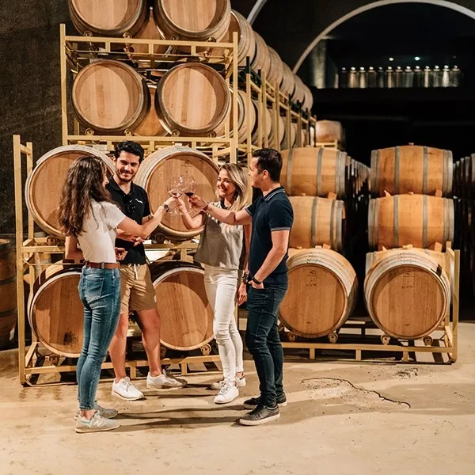

Te puede interesar

GASTRONOMÍA Y ENOLOGÍA
Rutas del vino de España

GASTRONOMÍA Y ENOLOGÍA
Diccionario gastronómico

GASTRONOMÍA Y ENOLOGÍA
Cocinas regionales de España
Viajar a una gran ciudad española es mucho más que visitar monumentos y museos. Es pasear por calles llenas de ambiente, mezclarte con sus gentes y formar parte de su vida. Es disponer de cientos de planes que hacer, disfrutar de su amplia agenda cultural, encontrar rincones sorprendentes que no esperas y aprovechar los amplios horarios de sus zonas comerciales para pasar días de shopping.
Las opciones de ocio en las ciudades se renuevan constantemente: actividades al aire libre, nuevos locales, novedades gastronómicas, espectáculos y festivales, rutas temáticas… Aprovecha las buenas conexiones internacionales de las ciudades españolas y redescúbrelas con cada visita.
Desde los pintxos del norte hasta el gazpacho del sur, la cocina española es un reflejo de su diversidad cultural y geográfica.
Estos son algunos elementos que la convierten en única:
Una tradición de compartir pequeños platos llenos de sabor.
El plato icónico que representa la cocina mediterránea.
De Rioja a Ribera del Duero, una experiencia para los sentidos.
Sabías que..
Oviedo es la Capital Española de la Gastronomía en 2024
GASTRONOMÍA Y ENOLOGÍA
Rutas del vino de España
GASTRONOMÍA Y ENOLOGÍA
Diccionario gastronómico
GASTRONOMÍA Y ENOLOGÍA
Cocinas regionales de España
Recorre las bodegas más emblemáticas y aprende sobre la elaboración del vino.
Aprende a preparar los platos más representativos de la gastronomía española.